半年で138本の動画を YouTube に出した。編集ソフトは使っていない。
作業を頼んでいるのは Claude Code。AI の Claude に、パソコンの中でファイルを作ったりコマンドを動かしたりしてもらえる道具で、有料で使っている。
台本、声、画面、書き出し、公開前のチェックまで、日本語で頼めばやってくれる。テロップを1本ずつ並べ直すこともなくなった。
1分AIニュース #15（ずんだもんのAIラボ）
前は見落としたまま公開していたもの
- 字幕の位置：Shorts の題名とボタンの下に、字幕が286px はみ出したまま出していた → いまは書き出す前に、0.2秒ごとに位置を測る
- 音量：8月25日までの87本のうち、目標に入っていたのは6本だけ → 8月26日からの50本は全部入っている
- 読み違い：ずんだもんが「五人ぶん」を「ゴジンブン」と読んでいた → いまは声を作る前に、読み方をカタカナで調べる
- 止まった画面：26.5秒のうち19.5秒、画面が止まったままだった → いまは0.5秒ごとに、コマの差を測る
上のショートも、誤字まじりの1段落を送ってから1時間33分で、YouTube の予約まで済んだ。
この仕組みは、手元で試せるサンプルにして Qiita（プログラムの書き方を共有するサイト）に置いた。このページでは、後半の第2部にコードまで全部載せている。
1段落の依頼が、1時間33分で予約まで
最初に送ったのは、この1段落だけ。打ったままで、誤字も直していない。
Claude codeにリセット機能ができた。シルバーウィークの連休中でtoken枯渇に困っている人、新リリースのClaude opus 5.5をじっくり試したい人におすすめ、という内容でXやYoutube shortに投稿したい。本日の午後の需要がありそうなときに投稿する想定。Playrightなどで実際にresetする手順をわかりやすく、step by stepなどで100人中100人がわかるくらいわかりやすく動画ににしたい。
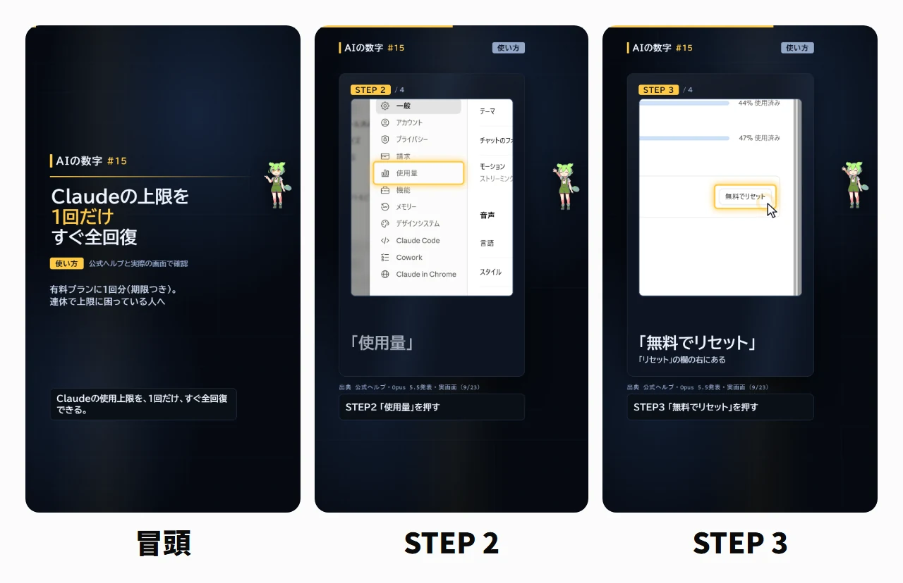
私がしたこと
- 10:18 依頼の1段落を送った
- 10:30 聞かれた3つに答えた（X のアカウント、YouTube の投稿先、確定ボタンまで押すか）
- 10:37 「no-sandboxは必要ですか？」と聞いた → Claude Code が、外れていたブラウザの保護を有効にした
- 10:44 「うまくろぐいんできません」と伝えた → Claude Code が撮り方を変えた
- 11:51 文面と動画を見て、13時の予約を選んだ
それ以外は Claude Code が進めた。画面や書き出し、チェックのスクリプトは、前の回までに書いてもらったものを使い回している。
この日に新しく作ってもらったのは、本物の画面を撮るスクリプトと、手順を見せる画面と、サムネだけ。
3つ目の質問は、こうだった。
「Reset for free」の確定ボタンまで押して、実際にリセットしますか？ 押すと1回分を使い、取り消せません。
依頼には「実際にresetする手順を」と書いていた。それでも Claude Code は、取り消せない操作の手前で手を止めて、確認してきた。
私は「確認画面で止める」を選んだ。
投稿先も毎回聞いてもらい、上げたあとはチャンネル名まで確かめてもらっている。YouTube も X もアカウントが2つずつあって、取り違えやすいからだ。
編集ソフトの作業は、どこへ行ったか
ショートも、4分20秒の解説も、83分の長尺も、8時間の睡眠用の動画も、この作り方で作ってきた。
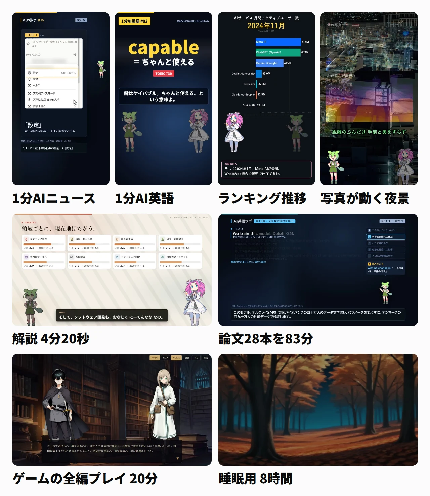
素材は、ほとんど自分では作っていない。立ち絵は配布されている素材、BGM もたいてい素材集、声は音声合成、睡眠用の絵は画像生成。
編集ソフトでやっていた作業は、それぞれこう変わった。
- テロップを1本ずつ置いて、位置と色をそろえる → 台本を書けば、字幕も画面の文字も、決めてある1枚のページに流し込まれる
- 声に合わせて、字幕を出すタイミングを決める → 声の長さから、字幕の出るタイミングと場面の切り替えが決まる
- キーフレームを打って、ズームと枠を動かす → 押す場所の座標から、ズームも枠もカーソルも決まる
- 声の間だけ BGM を下げ、音量をそろえる → 同じことを ffmpeg でやり、最後に全体の音量を -14 LUFS に合わせる
- 書き出して、通しで見返す → 書き出す前に、0.2秒ごとに文字の位置を測る
ffmpeg は、動画や音をつないだり変換したりする無料のソフト。画面は無くて、文字のコマンドで動かす。
ここで扱うのは、文字や図や写真、声、画面を撮った映像で見せる動画だ。実写を撮って編集するような動画は入っていない。
ゆっくりMovieMaker や CapCut で、立ち絵と字幕と合成音声の動画を作っている人なら、たぶんいちばん近い作り方だと思う。
画面：時刻を渡して、1コマずつ撮る
画面は、1枚のウェブページで作っている。このページに時刻を渡すと、その瞬間の絵を描く。
なので書き出す前に、どの瞬間でも止めて、文字がどこにあるかを数字で確かめられる。
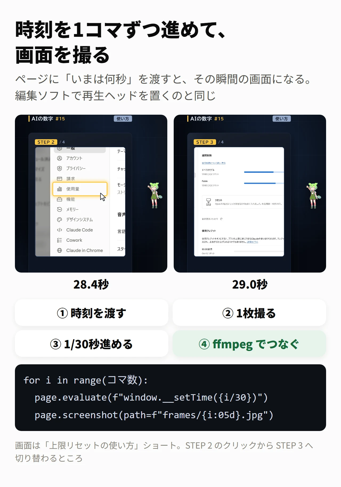
仕組み自体は簡単で、ページに window.__setTime(t) という入口を1つ置いて、t 秒の画面を描かせるだけ。
動きも全部 t から計算させる。前はアニメーションをブラウザに任せていて、撮ったコマが半透明になったり、場面が二重に写ったりした。
私がやっている「1分AIニュース」というシリーズも、ふだんの回はどれも同じ1枚のページで作っている。回ごとに変えるのは、ほぼ台本だけ。
声：台本を直せば、字幕もついてくる
台本を1文直すと、字幕も場面の切り替えも全部ついてくる。テロップを置き直さなくていい。
声は VOICEVOX のずんだもん。台本を1行ずつ読ませて、その長さで字幕の出るタイミングと場面の切り替えを決めている。
読み上げる文と字幕の文は、別々に持つようにしている。同じにしていたころ、読み上げ用に書いた「四万軒」がそのまま字幕に出て、画面の「40,615」と食い違ったことがある。
本物の画面：ログインが要る画面も撮れる
手順を見せる動画には、本物の画面がいる。ところが Playwright（ブラウザを自動で動かす道具）で開いたブラウザだと、Google のログインが通らなかった。
「うまくろぐいんできません」と送ったら、Claude Code がやり方を変えてきた。撮影専用のプロファイルで普通の Chrome を開いて、そこに私がログインする。スクリプトは、あとからその Chrome につないで撮る。
ここは撮影専用のプロファイルにしておくのが大事で、ふだん使いの Chrome をこの形で開くと、ログインしたままのブラウザをほかのプログラムからも動かせてしまう。
撮るときには、押す場所の座標も残しておく。ズームも黄色い枠も、カーソルが動くタイミングも、そこから決めている。
公開前に止める検査
困るのは、失敗してもエラーが出ないことだ。BGM を入れ忘れても、字幕がボタンの下に隠れても、書き出しは普通に終わる。
再生もできるので、見ただけでは気づきにくい。だから、見つけるためのチェックを1つずつ足してきた。
字幕の位置：メモに書いただけでは守れなかった
縦の動画で、同じ失敗を2回やった。字幕が Shorts のボタンや題名の下に隠れてしまう失敗だ。作っている画面では、ちゃんと見えている。
「画面の下から360px には文字を置かない」という決まりは、前から Claude Code のメモに書いてあった。それでも、字幕が286px はみ出したまま公開した動画がある。
メモに書いておくだけでは、守られなかった。書き出す前に座標を測るスクリプトにして、やっと毎回確かめるようになった。
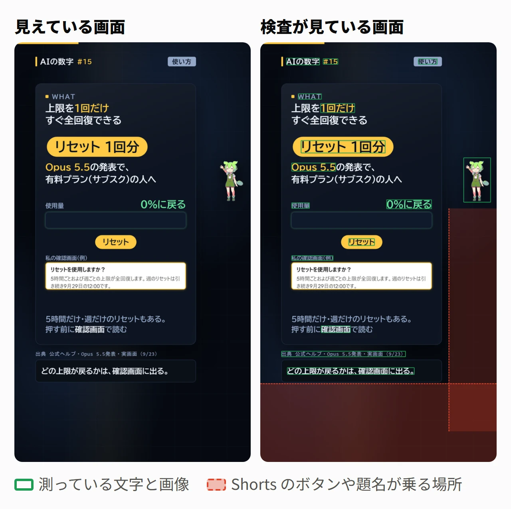
0.2秒ごとに画面を止めて、文字が下の360px に入っていないか、重なっていないか、枠からはみ出していないかを測っている。字が小さすぎないか、最後の行が1〜2字だけになっていないか、字幕が声とずれていないかも見る。
上限リセットの回でも、書き出す前に2か所止まった。字幕の「る。」や「復。」だけが、次の行に落ちていた。
ただ、すり抜けるものもある。前の回では、見出しの「表」1字だけが3行目に落ちたのに、当時のチェックでは引っかからなかった。これは、書き出したコマを Claude Code が自分で見て気づいた。
読み違い：声を作る前に止める
読みのチェックを入れたきっかけは「五人ぶん」だった。ずんだもんが「ゴジンブン」と読んでいて、公開の直前に、聞いていて気づいた。
読み方は画面に出ないので、見返しても分からない。
いまは声を作る前に、読み上げソフトが実際にどう読むかをカタカナで取り出して、よくある読み違いと照らし合わせている。登録している読み違いは11通り。登録していない読み違いは、まだ耳で聞いて拾うしかない。
音量：自分の動画の音量は、右クリックで分かる
パソコンで YouTube の動画を開いて右クリックし、「詳細統計情報」を選ぶと、その動画の音の大きさが見られる。自分の動画が小さすぎないか、何もインストールせずに確かめられる。
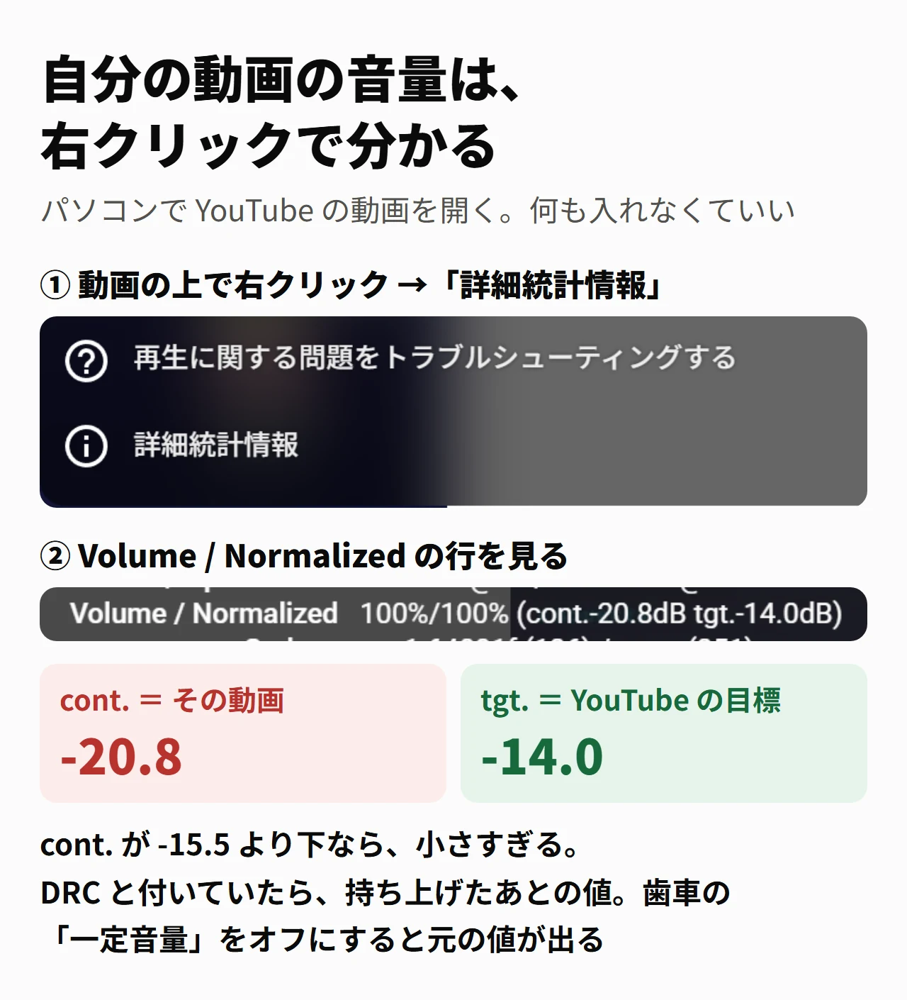
自分の動画を並べてみたら、8月25日までの87本のうち、目標に入っていた動画は6本しかなかった。
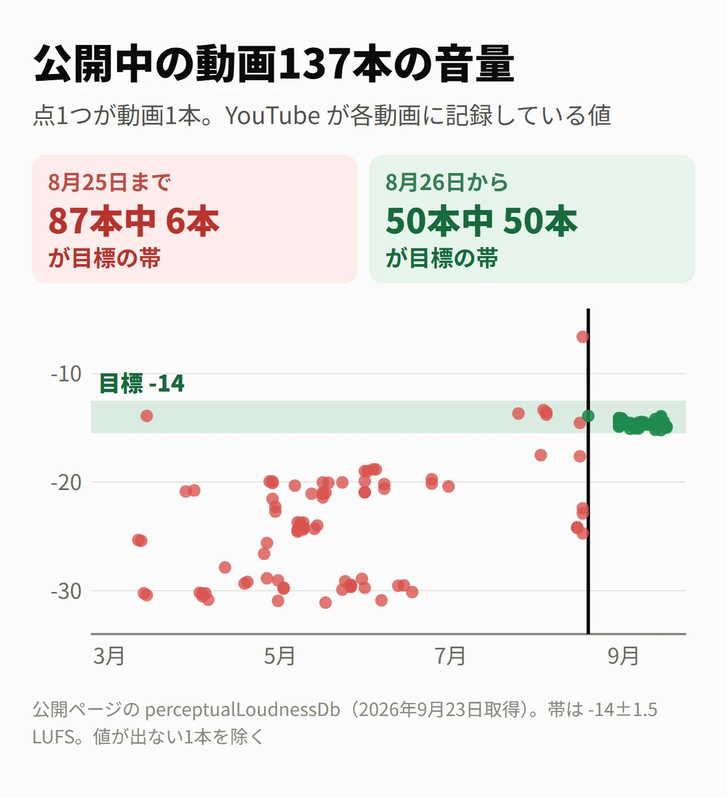
多くの動画で、最後に全体の音量を目標に合わせる手順が抜けていた。4月ごろのショートは、声と BGM を混ぜる ffmpeg のコマンドが、何も指定しないと本数で割って音を小さくしていた。
いまは、声が鳴っている間だけ BGM を下げて（編集ソフトでいうダッキング）、最後に全体を -14 LUFS に合わせている。YouTube が目標にしている大きさだ。
書き出すたびに測るようにした8月26日からは、50本全部が目標に入っている。
YouTube は、大きすぎる音なら下げてくれる。でも、小さい動画を目標まで上げてくれるとは限らない。最初からオンになっている「一定音量」でも、-30.2 LUFS の動画は -16.8 LUFS までしか上がらなかった。
Claude Code は音を聞けないので、BGM の高い音がスマホでシャリシャリしないかも、帯域ごとの強さを数字で測って確かめてもらっている。
止まった画面：チェックを通っても、止まって見える
26.5秒のうち19.5秒、画面がまったく動いていない動画を作ってしまったことがある。いまは0.5秒ごとにコマの差を測って、止まった画面が3秒続いたら止めている。
ところが、このチェックを通った動画でも、見る人には止まって見えることがあった。背景がゆっくり揺れていて口も動いているので、機械の判定は通ってしまう。
これは、審査役の Claude が見つけてくれた。
機械が見逃すものは、別の Claude に見てもらう
作る Claude とは別に、審査だけをする Claude を用意している。中身は同じ Claude だけど、本編・サムネ・事実の3つに役割を分けて、実物を見せて、直すところだけを返してもらう。
本編を見る係には、先にこう伝えた。
機械の検査はすでに全部通っています（…）。
それ以外を見てください。返ってきたのは、カードの中身が10秒以上変わらない区間が2つある、という指摘だった。機械のチェックが通ったといっても、決めておいた壊れ方が無かったというだけだった。
名前を隠すためのぼかしの失敗も、この係が止めてくれた。
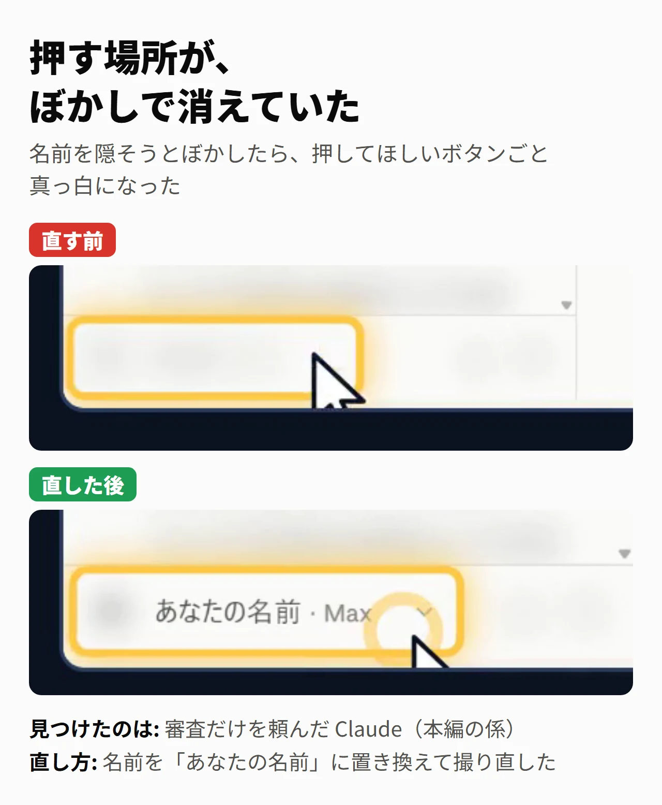
いまは名前を「あなたの名前」に置き換えてから撮り、ぼかしは履歴だけにしている。
数字は、元の発表の一文とセットで台帳に入れて照らし合わせている。試しにわざと誤りを6つ混ぜてみたら、「出力が40%速い」だけがすり抜けた。40% という数字自体は、料金の値として台帳にあったからだ。
引用そのものは本物でも、使い方が言い過ぎだと、数字の照合ではすり抜けてしまう。
なので事実の係には、こう頼んでいる（上限リセットの回に渡した指示から、要のところだけ抜き出した）。
すべての主張が一次資料で支えられているか。
特に「引用は本物でも、使い方が言い過ぎ」の型
（条件の混同、一部だけ書く、書いていない意味を足す）を探す。
問題のある箇所だけを表で。
「公開を止めるべき誤り」があるかどうかを最後に1行で。実際は、これに公式ヘルプの全文と撮った画面の文字、気になっていた食い違いの例も付けて渡した。
このとき返ってきた「公開を止めるべき誤り」は1件。最初の版は「使うと、5時間ごと・週ごとの上限が、すぐに全回復する」と、誰にでも同じことが起きるように書いてしまっていた。
点数も付けてもらうけれど、出すかどうかは点数では決めていない。あるショートは54点から直しを重ねて、最後は53点に下がった。
いまは、次のチェックを機械で全部通して、事実の係から「公開を止めるべき誤りは無い」と返ってきたら、私が文面と動画を見て予約している。
- 長さは60秒以下（このシリーズの決まり。Shorts 自体は3分まで作れる）
- 音量は -14±1.5 LUFS
- 音割れしない（ピーク -1.0 dBTP 以下）
- 1.5秒以上の無音が無い
- 字幕は画面の下から360px より上
- 音声は48kHz のステレオ
- 冒頭0.5秒が暗すぎない
- 止まった画面は3秒未満で、全体の3分の1未満
ほかに、つまずいたこと
- 隠したつもりの部品が場所を取り続け、数字が枠の外へ押し出された → 隠すなら、場所ごと消す指定にする
- 前回のコマが残っていて、新しい動画に古いコマが混ざった → 書き出す前に、コマのフォルダを空にする
- 一覧の大きさにすると、サムネの見出し以外の字が読めない → 縮小版を作って、字の高さを測る
最初の1本の作り方
コードが書けないと無理そう、と思うかもしれない。でも、ここに出てきたスクリプトは全部、Claude Code に頼んで書いてもらったものだ。頼む文さえ書ければ、始められる。
使ったもの
- Claude Code：頼んで、スクリプトを書かせて動かす（有料のプランで使う）
- Python と Playwright：スクリプトを動かし、画面を1コマずつ撮る（無料）
- ffmpeg：コマと音をつなぎ、音量を測る（無料）
- VOICEVOX：声を作る（無料）
VOICEVOX の声を使うなら、動画の説明欄などに「VOICEVOX:ずんだもん」のようなクレジットを入れる必要がある。
頼み方
最初の1本は、たとえばこう頼む。
自分のチャンネルに出す、
「○○の使い方」を30秒で説明する、
縦1080×1920のショートを作って。
台本は先に見せて。
画面は1枚のHTMLで組み、
window.__setTime(t) を呼ぶと t 秒の画面になるようにする。
動きは全部 t から計算して、
CSSのアニメーションやトランジションは使わない。
Playwrightで1/30秒ずつ撮って、ffmpegでmp4にする。
撮る前にコマのフォルダは空にする。
書き出す前に0.2秒ごとに文字の位置を測って、
画面の下から360pxに文字が入っていたら止めて。このうち、外さないでほしいのは次のところだ。
- window.__setTime(t)：時刻を渡すと、その瞬間の画面になる
- CSS のアニメーションを使わない：撮った瞬間が半透明で写るのを防ぐ
- 下から360px に文字が入ったら止める：Shorts の題名やボタンの下に字幕が隠れるのを防ぐ
声や BGM を入れるなら、「最後に全体の音量を -14 LUFS に合わせて」と付け足す。
チェックは、あとから1つずつ足していけばいい。私のチェックも、ほとんどは一度失敗してから足したものだ。
サンプルの置き場
頼む前に、まず動くものを触ってみたい人向けに、この記事の仕組みをサンプルにして Qiita に置いた。自分のパソコンで試せる形にしてある。
このページの第2部サンプル一式 — コードの全部と、ブラウザで動くデモzip でも落とせる（MIT）Qiita の記事 → 編集ソフトなしで縦動画を作り、公開前の検査で止めるサンプル一式
- できること：台本の JSON から縦1080×1920の動画を書き出し、公開前の検査まで通す。NG が出たら、その工程で止まる
- 入っている検査：読み違い、字幕の位置、音量、音割れ、無音の穴、固まった画面、黒いコマ、冒頭の暗さ、長さ
- 最初の1回：Python・Playwright・ffmpeg があれば、声なしの通しならコマンド1行で試せる。声を入れるなら VOICEVOX も使う
サンプルを最初に流したときも、サンプル自身の字幕が2本、「最後の行が1〜2字だけ」で止まった。
公開する前には、別の Claude にこのサンプルを壊してもらった。正しく読めている「一人前」まで止めてしまう、といった問題が20件見つかって、全部直してある。
動作は、2026年9月24日に Windows 11 で確かめた。
まとめ
- 台本を直せば、字幕も場面の切り替えもついてくる
- 字幕の位置、音量、読み違い、止まった画面は、公開前に機械が止める
- 機械が見逃すものは、審査役の Claude と自分の目で拾う
- 最初の1本は、頼む文の1段落から。動くサンプルは、この下の第2部にある
行の最後に1〜2字だけ落ちる失敗は、字幕でも表紙でも見出しでもやった。記録に残っているだけで5回ある。
そのたびにチェックを1つ足してきたので、前につまずいた所は、次の1本から機械が先に見てくれる。全部ではないけれど、編集ソフトを使わずに作ってきていちばんよかったのは、たぶんここだ。
音量の話は、前の記事でもっと詳しく書いている。
note ↗ 前の記事音量合わせと公開前チェックを自動にしたら、YouTube動画の音量が50本全部そろったnote.com/コードは Qiita に載せたものと同じで、MIT ライセンスです。
台本の JSON を書いて python make_short.py script.json を1回流すと、縦 1080×1920 のショート動画ができて、公開前の検査まで通ります。どこかで NG が出たら、その工程で止まります。
これは、編集ソフトを使わずに半年で138本の動画を YouTube に出してきた仕組みから、手元の環境に依存するところを抜いたサンプルです。元のスクリプトも、このサンプルも、Claude Code に書いてもらいました。同じ仕組みで作った実際のショートは、第1部の最初に載せています。
↓サンプル一式を zip で落とすvideo-kit-sample.zip11ファイル ・ 23 KB ・ MIT ライセンスこのサンプルで分かること
- ウェブページ（HTML）を1コマずつ撮って動画にする方法（
window.__setTime(t)） - 書き出す前に、字幕の位置を1字ずつ座標で測って止める方法
- VOICEVOX の読み違いを、声を作る前に止める方法
- 声と BGM を混ぜて、YouTube の目標の音量（-14 LUFS）にそろえる方法
- 書き出した mp4 を、ffmpeg だけで公開前に検査する方法
このページで試す
左は、サンプルを流して書き出した mp4 です。右は、同じ scene.html をこのページの中で開き、つまみで決めた時刻 t を window.__setTime(t) に渡して描いています。t が同じなら、何度描いても同じ絵になります。左の mp4 は、この絵を1コマずつ撮ってつないだものです。
「検査の目で見る」を入れると、check_layout.py が測っている文字の行（緑。NG は赤）と、文字を置かない場所（下から360px と、右のボタンの列）を、画面の上に重ねて描きます。字幕を書き換えると、その場で測り直します。「0.2秒ごとに全部測る」は、check_layout.py と同じ関数で1字ずつ位置を取り、同じ基準で判定します。
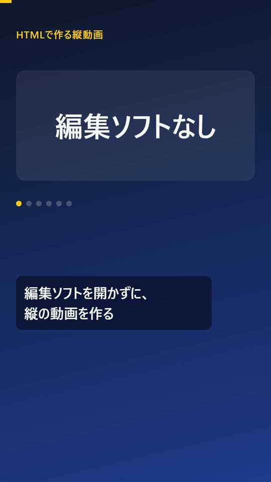
文字を置かない場所（下から360px・右のボタンの列）測っている文字の行NG の行文字でない部品（data-check）
読み込み中…
（ここに check_layout.py と同じ形で結果が出ます）
「字幕の改行を外す」は、このサンプルを作っていたときに実際に止まった字幕です（5行目）。「長すぎる字幕にする」は、下の360px で止まる例として Qiita に載せた字幕です（2行目）。字の幅と改行の位置はフォントとブラウザで変わるので、見ている環境によっては、左の mp4 と右の絵がずれたり、判定の結果が変わったりします。左の mp4 は書き出したものなので、字幕を書き換えても変わりません。
手元で動かす
↓サンプル一式を zip で落とすvideo-kit-sample.zip11ファイル ・ 23 KB ・ MIT ライセンス要るものは3つです。
- Python 3.8 以上（3.10 で確認）
- Playwright:
pip install playwrightのあとpython -m playwright install chromium - ffmpeg 4.4 以上と ffprobe（ターミナルで
ffmpeg -versionが通ること）
声を入れるなら VOICEVOX も使います。先に起動しておきます（http://127.0.0.1:50021 で待ち受けます）。
zip を展開してできた video-kit-sample フォルダ（make_short.py がある所）で流します。下のコードを1つのフォルダに置いても同じです。
python make_short.py script.json --no-voice # 声なし・試し用の和音で、通しだけ試す
python make_short.py script.json # VOICEVOX の声を入れる
python make_short.py script.json --bgm 曲.mp3 # BGM を入れる（声の間だけ下がる）できるのは build/final.mp4 です。VOICEVOX の声で流すと、こう出ます（書き出しの途中経過は省きました）。
$ python make_short.py script.json
=== 1. 声と時刻 ===
01 ヘンシュウソフトオヒラカズニタテノドオガオツクッテミマス
02 ガメンワイチマイノウェブペエジデス
03 ジコクオワタストソノシュンカンノガメンニナリマス
04 ヒトコマズツトッテエフエフエムペグデツナギマス
05 カキダスマエニモジノイチオハカリマス
06 サイゴニオトノオオキサオモクヒョオニソロエマス
→ 6行 / 23.3秒 build/timing.json・build/voice.wav
=== 2. 長さ（書き出す前） ===
OK 長さ 23.3秒（3分以下）
=== 3. 文字の位置（書き出す前） ===
117時点を測った（0.2秒ごと・23.3秒）
→ OK
=== 4. 書き出し ===
699コマ撮った（53秒）
→ build/video.mp4
=== 5. 音を混ぜて、音量をそろえる ===
→ build/final.mp4 音量 -25.2 → -13.9 LUFS（目標 -14） / ピーク -2.0 dBTP
=== 6. 公開前の検査 ===
final.mp4 23.3秒 / 1080x1920
OK 音の大きさ -14.0 LUFS（目標 -14±1.5）
OK 音割れ ピーク -2.0 dBTP（-1 以下）
OK 無音の穴 なし
OK 固まった画面 なし
OK 黒いコマ なし
OK 冒頭の暗さ 明るさ 56/255（20 以上）
→ 公開してよい
=== 7. 音声の形 ===
OK 音声 48000Hz・2ch（勧めは 48000Hz・2ch）
→ できた: build/final.mp4Mac と Linux では python を python3 に読み替えてください。Linux は、python -m playwright install --with-deps chromium でブラウザの部品も入れ、日本語のフォント（fonts-noto-cjk など）も入れます。フォントが無いと字が □ になり、検査では拾えません。
Windows の PowerShell 5.1 で出力をファイルに送るときは、先に [Console]::OutputEncoding = [Text.Encoding]::UTF8 を打ちます。打たないと日本語が化けます。
全体の流れ
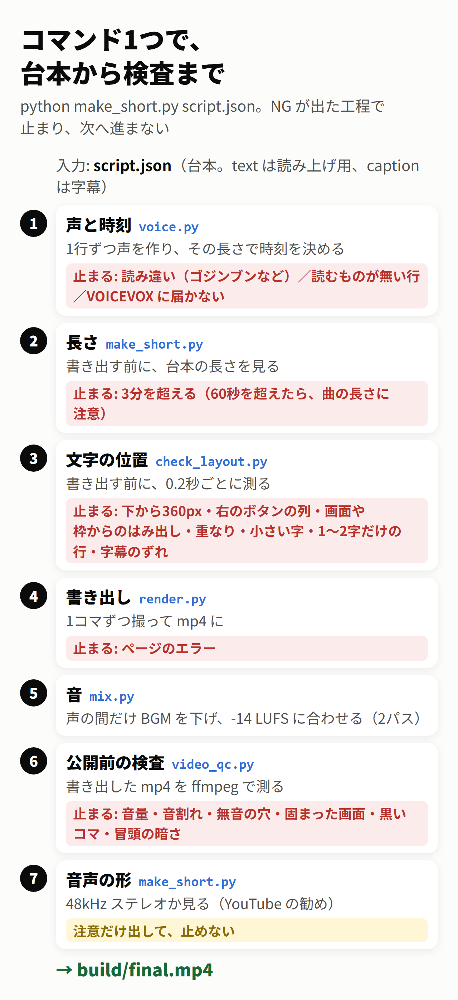
| ファイル | すること |
|---|---|
| script.json | 台本。text は読み上げ用、caption は字幕（\n で改行）、big は画面の大きな文字 |
| scene.html | 画面。window.__setTime(t) を呼ぶと t 秒の画面になる。ブラウザで直接開くと、見本の台本でプレビューが流れる |
| voice.py | 1行ずつ声を作り、その長さから時刻を決める。読み違いは声を作る前に止める |
| check_layout.py | 書き出す前に、0.2秒ごとに文字の位置を1字ずつ測る |
| render.py | 1コマずつ撮って、音の無い mp4 にする |
| mix.py | 声と BGM を混ぜ（声の間だけ BGM を下げる）、音量を -14 LUFS にそろえる |
| video_qc.py | 公開前の検査（音量・音割れ・無音の穴・固まった画面・黒いコマ・冒頭の暗さ） |
| make_short.py | 上の工程を順に流す。書き出す前に長さ（3分まで）を、最後に音声の形を見る |
| snap.py | 指定した時刻の画面を1枚撮る（python snap.py 7.2。先に voice.py を流す） |
script.json — 台本
text は声にする文、caption は字幕です。わざと分けています。同じ文字列にしていたころ、読み上げのために「四万軒」と書いた文がそのまま字幕に出て、画面の大きな数字「40,615」と表記が割れました。英字の「ffmpeg」も、声は「エフエフエムペグ」、字幕は「ffmpeg」と書き分けます。
speaker は VOICEVOX の話者の番号（3 はずんだもん）、speed は話す速さ、title は画面の左上に出る題です。
script.json13行全文を開く
{
"title": "HTMLで作る縦動画",
"speaker": 3,
"speed": 1.1,
"lines": [
{"text": "編集ソフトを開かずに、縦の動画を作ってみます。", "caption": "編集ソフトを開かずに、\n縦の動画を作る", "big": "編集ソフトなし"},
{"text": "画面は、一枚のウェブページです。", "caption": "画面は、1枚のウェブページ", "big": "HTML 1枚"},
{"text": "時刻を渡すと、その瞬間の画面になります。", "caption": "時刻を渡すと、\nその瞬間の画面になる", "big": "__setTime(t)"},
{"text": "ひとコマずつ撮って、エフエフエムペグでつなぎます。", "caption": "1コマずつ撮って、ffmpeg でつなぐ", "big": "30コマ／秒"},
{"text": "書き出す前に、文字の位置を測ります。", "caption": "書き出す前に、\n文字の位置を測る", "big": "0.2秒ごと"},
{"text": "最後に、音の大きさを目標にそろえます。", "caption": "最後に、音量を -14 LUFS にそろえる", "big": "-14 LUFS"}
]
}scene.html — 画面
window.__setTime(t) を呼ぶと、t 秒の瞬間の画面になります。動きは全部 t から計算していて、CSS のアニメーションやトランジションは使いません。アニメーションをブラウザの時計に任せていたころは、撮った瞬間の絵が半透明になり、場面が二重に写りました。
t だけで画面が決まるので、7.2秒を渡せば何度開いても同じ7.2秒の画面になります。書き出す前に、どの瞬間でも止めて文字の位置を測れるのは、このためです。
枠にする部品には data-box を、文字の無い部品で位置を測りたいものには data-check を付けます。検査がそれを見ます。
scene.html83行全文を開く
<!doctype html>
<html lang="ja">
<head>
<meta charset="utf-8">
<title>scene</title>
<!--
縦 1080×1920 の画面。window.__setTime(t) を呼ぶと、t 秒の瞬間の画面になる。
動きはすべて t から計算する（CSS のアニメーションやトランジションは使わない。撮った瞬間が半透明で写るため）。
ブラウザでこのファイルを直接開くと、見本の台本でプレビューが流れる。
-->
<style>
html, body { margin: 0; width: 1080px; height: 1920px; overflow: hidden; background: #0f172a; }
body { font-family: "Hiragino Sans", "Yu Gothic UI", "Yu Gothic", "Meiryo", "Noto Sans CJK JP", "Noto Sans JP", sans-serif; color: #f8fafc; }
#bg { position: absolute; inset: 0; }
#bar { position: absolute; left: 0; top: 0; height: 12px; background: #facc15; }
#label { position: absolute; left: 64px; top: 110px; font-size: 40px; font-weight: 700; color: #facc15; letter-spacing: .04em; }
#card { position: absolute; left: 64px; right: 64px; top: 280px; height: 440px; border-radius: 36px;
background: rgba(255, 255, 255, .08); display: flex; align-items: center; justify-content: center; }
#big { font-size: 112px; font-weight: 800; text-align: center; line-height: 1.2; padding: 0 40px; word-break: auto-phrase; }
/* 字幕は下から360px（Shorts の題名）と、右の操作ボタンの列（x>860）に入らない場所に置く */
#cap { position: absolute; left: 64px; width: 780px; top: 1100px; box-sizing: border-box; padding: 26px 32px;
border-radius: 24px; background: rgba(2, 6, 23, .55); font-size: 56px; font-weight: 700;
line-height: 1.45; word-break: auto-phrase; white-space: pre-line; }
/* 台本の何行目かを示す点 */
#dots { position: absolute; left: 64px; top: 800px; width: 780px; display: flex; flex-wrap: wrap; gap: 18px; }
#dots i { display: block; width: 22px; height: 22px; border-radius: 50%; background: rgba(255, 255, 255, .22); }
#dots i.on { background: #facc15; }
</style>
</head>
<body>
<div id="bg"></div>
<div id="bar"></div>
<div id="label"></div>
<div id="card" data-box><div id="big"></div></div>
<div id="dots" data-check></div>
<div id="cap" data-box></div>
<script>
(function () {
// 撮るときは render.py / check_layout.py / snap.py が window.__DATA（build/timing.json の中身）を先に入れる
const DEMO = { title: "HTMLで作る縦動画（プレビュー）", total: 11.5, lines: [
{ caption: "ブラウザで開くと、プレビューが流れる", big: "プレビュー", start: 0.4, dur: 3.2 },
{ caption: "書き出しは、1コマずつ撮って mp4 に", big: "render.py", start: 4.0, dur: 3.2 },
{ caption: "文字の位置は、書き出す前に測る", big: "0.2秒ごと", start: 7.6, dur: 3.0 } ] };
const D = window.__DATA || DEMO;
const $ = id => document.getElementById(id);
$('label').textContent = D.title || '';
$('dots').innerHTML = D.lines.map(() => '<i></i>').join('');
function lineAt(t) { // t 秒に出ている行（その行の開始を過ぎた最後の行）
let i = 0;
for (let k = 0; k < D.lines.length; k++) if (t >= D.lines[k].start) i = k;
return i;
}
window.__setTime = function (t) {
const i = lineAt(t), L = D.lines[i];
const k = Math.max(0, Math.min(1, (t - L.start) / 0.3)); // 行が変わってから0.3秒で出し切る
const e = 1 - Math.pow(1 - k, 3);
$('big').textContent = L.big || '';
$('big').style.opacity = e.toFixed(3);
$('big').style.transform = 'scale(' + (0.92 + 0.08 * e).toFixed(4) + ')';
$('cap').textContent = L.caption; // 字幕は行の頭から濃く出す（声とずらさない）
$('cap').style.display = L.caption.trim() ? '' : 'none'; // 空の字幕なら、下地の帯ごと隠す
$('cap').dataset.line = i;
[...$('dots').children].forEach((d, j) => d.className = j <= i ? 'on' : '');
$('bar').style.width = (100 * Math.min(1, t / D.total)).toFixed(3) + '%';
const a = 160 + 12 * Math.sin(t * 0.6);
$('bg').style.background = 'linear-gradient(' + a.toFixed(2) + 'deg, #0f172a 0%, #1e3a8a 100%)';
};
if (window.__CAPTURE) {
window.__setTime(0);
} else { // 直接開いたときだけ、プレビューとして流す
const t0 = performance.now();
(function loop() {
window.__setTime(((performance.now() - t0) / 1000) % D.total);
requestAnimationFrame(loop);
})();
}
})();
</script>
</body>
</html>voice.py — 声と時刻、読み違いの検査
VOICEVOX で1行ずつ声を作り、その長さから、字幕を出す時刻と場面を切り替える時刻を決めます。台本を1文直せば、画面の時刻も全部ついてきます。
声を作る前に、VOICEVOX が実際に読むカタカナを取り出して、よくある読み違いと照らし合わせます。読みは画面に出ないので、動画を見返しても気づけません。実際に「五人ぶん」を「ゴジンブン」と読んでいたのに、公開の直前まで気づかなかったことがあります。試しに「五人ぶん」を入れると、今の VOICEVOX（0.25.1）もゴジンブンと読むので、こう止まります。
$ python voice.py 試し.json
01 ゴジンブンノセキオヨオイシタ
02 ヨンホンノドオガオツクッタ
03 ヒトリデツクッタ
NG 01行目「五人ぶんの席を用意した。」の「五人」を ゴジン… と読む（正しくは ごにん）
→ 読み上げ用の text を、かなで書き直す（字幕の caption はそのままでよい）読み違いかどうかは、その字を正しい読みのかなに置き換えて読ませ直し、出てはいけない読みが減るかで決めます。「資本を四本に」の「シホン」は資本の読みなので、置き換えても減らず、止まりません。
前後で読みが変わる語（「一人前」はイチニン、「七人の侍」はシチニン）は、読み違いの一覧に入れていません。入れていた版は、正しく読んでいる行まで止めていました。登録していない読み違いは拾えないので、全行のカナを印字して、目でも見られるようにしています。記号や絵文字だけで、読むものが無い行も止めます。
voice.py124行全文を開く
# -*- coding: utf-8 -*-
"""台本から声を作り、行ごとの時刻（build/timing.json）を決める。
python voice.py script.json VOICEVOX（http://127.0.0.1:50021）で1行ずつ声を作る
python voice.py script.json --no-voice 声なし。字幕の字数から長さを見積もる（VOICEVOX が無くても試せる）
声を作る前に、VOICEVOX が実際に読むカタカナを取り出して、よくある読み違いと照らし合わせる。
見つかったら、声を作らずに止まる（終了コード 1）。登録していない読み違いもあるので、
印字される全行のカナは目でも見る。
出力: build/timing.json・build/voice.wav（声ありのとき）・build/voice/01.wav …
"""
import argparse, json, sys, urllib.error, urllib.parse, urllib.request, wave
from pathlib import Path
for _s in (sys.stdout, sys.stderr):
if hasattr(_s, "reconfigure"):
_s.reconfigure(encoding="utf-8", errors="replace") # Windows のターミナルでも日本語を崩さない
BUILD = Path(__file__).resolve().parent / "build"
LEAD, GAP, TAIL = 0.4, 0.35, 1.0 # 最初の間・行と行の間・最後の余白（秒）
# よくある読み違い: (出てはいけない読み, 正しい読み（かな）, この字が台本の text にあるときだけ見る)
# 「一人前（いちにんまえ）」「七人の侍（しちにん）」のように前後で読みが変わる語は、ここに入れない。
NG = [("ゴジン", "ごにん", "五人"), ("シニン", "よにん", "四人"), ("シホン", "よんほん", "四本")]
def post(url, path, params, body=None):
data = json.dumps(body).encode("utf-8") if body is not None else b""
req = urllib.request.Request(f"{url}{path}?{urllib.parse.urlencode(params)}", data=data, method="POST",
headers={"Content-Type": "application/json"})
with urllib.request.urlopen(req, timeout=120) as r:
return r.read()
def kana_of(url, text, spk):
q = json.loads(post(url, "/audio_query", {"text": text, "speaker": spk}))
return q, "".join(m["text"] for ph in q["accent_phrases"] for m in ph["moras"])
def main():
ap = argparse.ArgumentParser()
ap.add_argument("script")
ap.add_argument("--no-voice", action="store_true")
ap.add_argument("--url", default="http://127.0.0.1:50021")
a = ap.parse_args()
sc = json.loads(Path(a.script).read_text(encoding="utf-8-sig")) # BOM 付き（PowerShell で保存したもの）も読む
lines = sc.get("lines") or []
miss = [i for i, ln in enumerate(lines, 1) if "caption" not in ln or (not a.no_voice and not str(ln.get("text", "")).strip())]
if not lines or miss:
print("NG 台本に lines が無いか、text / caption の無い行がある:", miss or "lines が空")
return 1
BUILD.mkdir(exist_ok=True)
clips = []
if a.no_voice:
durs = [max(1.8, len(ln["caption"]) / 6.5 + 0.5) for ln in lines]
else:
try:
urllib.request.urlopen(a.url + "/version", timeout=5).read()
except Exception:
print(f"NG VOICEVOX に届かない（{a.url}）。VOICEVOX を起動するか、--no-voice で試す")
return 1
spk, queries, bad = sc.get("speaker", 3), [], []
try:
for i, ln in enumerate(lines, 1):
q, kana = kana_of(a.url, ln["text"], spk)
q["speedScale"] = sc.get("speed", 1.0)
print(f"{i:02d} {kana}")
if not kana:
bad.append(f"{i:02d}行目「{ln['text']}」に読むものが無い（記号や絵文字だけ？）")
for ng, ok, key in NG:
# その字を正しい読みに置き換えて読ませ直し、出てはいけない読みが減るときだけ読み違いとする
# （「資本を四本に」の「シホン」は資本の読みなので、置き換えても減らない）
if key in ln["text"] and ng in kana:
_, fixed = kana_of(a.url, ln["text"].replace(key, ok), spk)
if kana.count(ng) > fixed.count(ng):
bad.append(f"{i:02d}行目「{ln['text']}」の「{key}」を {ng}… と読む（正しくは {ok}）")
queries.append(q)
except urllib.error.HTTPError as e:
print(f"NG VOICEVOX がエラーを返した（HTTP {e.code}）。speaker の番号が正しいか、{a.url}/speakers で確かめる")
return 1
if bad:
for b in bad:
print("NG ", b)
print("→ 読み上げ用の text を、かなで書き直す（字幕の caption はそのままでよい）")
return 1
(BUILD / "voice").mkdir(exist_ok=True)
durs = []
for i, q in enumerate(queries, 1):
p = BUILD / "voice" / f"{i:02d}.wav"
p.write_bytes(post(a.url, "/synthesis", {"speaker": spk}, q))
with wave.open(str(p)) as w:
clips.append((w.getparams(), w.readframes(w.getnframes())))
durs.append(w.getnframes() / w.getframerate())
# 声の長さから、字幕を出す時刻と場面を切り替える時刻を決める
t, out = LEAD, []
for ln, d in zip(lines, durs):
out.append({"caption": ln["caption"], "big": ln.get("big", ""), "start": round(t, 3), "dur": round(d, 3)})
t += d + GAP
total = round(t - GAP + TAIL, 3)
tm = {"title": sc.get("title", ""), "total": total, "lines": out}
(BUILD / "timing.json").write_text(json.dumps(tm, ensure_ascii=False, indent=1), encoding="utf-8")
voice = BUILD / "voice.wav"
if clips: # 各行の声を、決めた時刻に並べて1本にする
prm = clips[0][0]
step = prm.sampwidth * prm.nchannels
buf = bytearray()
for (_, frames), ln in zip(clips, out):
buf += b"\0" * max(0, int(ln["start"] * prm.framerate) * step - len(buf))
buf += frames
buf += b"\0" * max(0, int(total * prm.framerate) * step - len(buf))
with wave.open(str(voice), "wb") as w:
w.setnchannels(prm.nchannels); w.setsampwidth(prm.sampwidth); w.setframerate(prm.framerate)
w.writeframes(bytes(buf))
elif voice.exists():
voice.unlink() # 前に作った声が残っていると、声なしの試しに混ざる
print(f"→ {len(out)}行 / {total:.1f}秒 build/timing.json" + ("・build/voice.wav" if clips else "（声なし）"))
return 0
if __name__ == "__main__":
sys.exit(main())check_layout.py — 書き出す前に、文字の位置を測る
0.2秒ごとに __setTime で画面を止め、見えている文字を1字ずつ Range.getClientRects() で測ります。要素の箱ではなく、実際の文字の位置です。字の位置を行ごとにまとめて、次を見ます。
- 画面の外や、枠（
data-boxを付けた部品）からはみ出していないか - 下から360px に入っていないか（Shorts の題名と説明が重なる）
- 右の操作ボタンの列（x>860、y 760〜1780）に入っていないか
- 文字どうしが重なっていないか
- 字が小さすぎないか（28px 未満。スマホでは約3分の1の大きさで見えます）
- 最後の行が1〜2字だけになっていないか（最後の行に並ぶ字を数えます）
- 声が鳴っている間に、その行の字幕が見えていて、台本どおりの文か
このサンプルを最初に流したとき、自分で書いた字幕が2本、「最後の行が1〜2字だけ」で止まりました。
$ python check_layout.py
112時点を測った（0.2秒ごと・22.3秒）
NG 0.0秒〜 最後の行が1〜2字だけ 「編集ソフトを開かずに、縦の動画を作る」（21回）
NG 7.0秒〜 最後の行が1〜2字だけ 「時刻を渡すと、その瞬間の画面になる」（17回）
→ NG が 2 件。直してから書き出す字幕に下地の帯を付けて見た目を直したら、今度は別の1本が止まりました。caption に \n を入れて、切れる場所を決めて直しています。
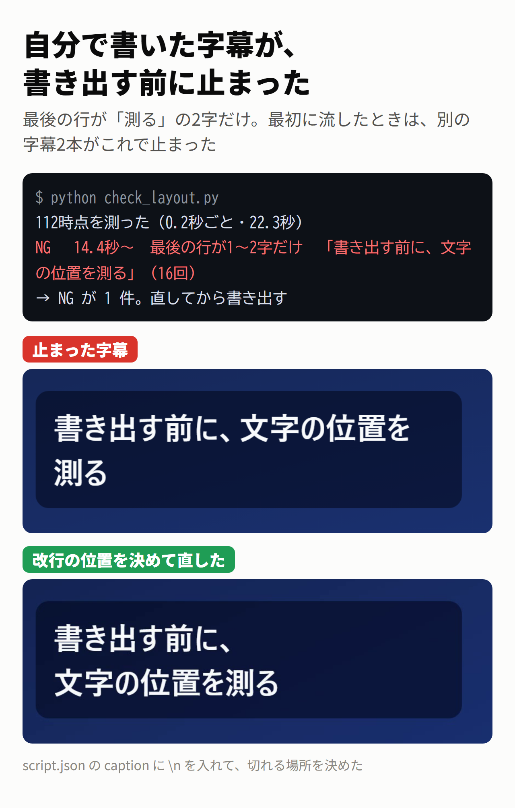
字幕が長すぎると、下の360px に入って止まります。
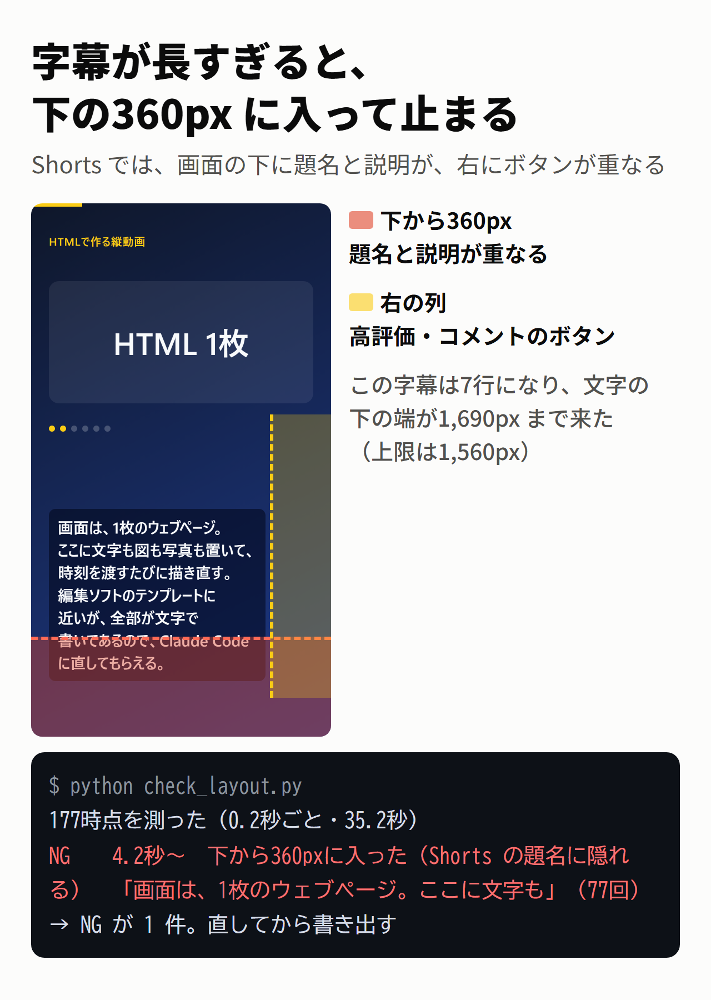
座標は正しくても、見た目がおかしいものはあります。たとえば「通らなか／った」のように単語の途中で改行されても、座標の検査は通ります。snap.py で気になる時刻を撮って、目でも見てください。
check_layout.py148行全文を開く
# -*- coding: utf-8 -*-
"""書き出す前に、0.2秒ごとに画面を止めて、文字の位置を測る。
python check_layout.py （scene.html と build/timing.json を使う。先に voice.py を流す）
見るもの: 画面の外や、枠（data-box を付けた部品）からはみ出していないか／下から360px（Shorts の題名と説明）に入っていないか／
右の操作ボタンの列に入っていないか／文字どうしが重なっていないか／字が小さすぎないか／
最後の行が1〜2字だけになっていないか／声が鳴っている間に、その行の字幕が見えていて、台本どおりの文か
文字は1字ずつ位置を取り、行ごとに判定する。文字でない部品は data-check を付けたものを測る。
1つでも NG があれば終了コード 1（書き出しの前に止まる）。
座標は正しくても変に見えるもの（単語の途中の改行など）は拾えないので、snap.py で撮って目でも見る。
"""
import json, re, sys
from pathlib import Path
from playwright.sync_api import sync_playwright
for _s in (sys.stdout, sys.stderr):
if hasattr(_s, "reconfigure"):
_s.reconfigure(encoding="utf-8", errors="replace")
HERE = Path(__file__).resolve().parent
W, H = 1080, 1920
SAFE_BOTTOM = 1560 # これより下は Shorts の題名・説明が重なる
RIGHT_X, RIGHT_Y = 860, (760, 1780) # 右の操作ボタン（高評価・コメントなど）が並ぶ場所
MIN_FONT = 28 # スマホでは約3分の1の大きさで見える
STEP = 0.2
# 見えている文字を1字ずつ測り、行ごとの矩形と、最後の行の字数を返す。data-check の部品は箱で測る
MEASURE = """() => {
const vis = el => { for (let e = el; e && e.nodeType === 1; e = e.parentElement) {
const s = getComputedStyle(e);
if (s.display === 'none' || s.visibility === 'hidden' || parseFloat(s.opacity) < 0.05) return false; }
return true; };
const els = [], items = [];
for (const el of document.body.querySelectorAll('*')) {
if (['SCRIPT', 'STYLE'].includes(el.tagName) || !vis(el)) continue;
const own = [...el.childNodes].filter(n => n.nodeType === 3 && n.textContent.trim());
if (own.length) {
const fs = parseFloat(getComputedStyle(el).fontSize), lines = [];
for (const n of own) {
let i = 0;
for (const ch of n.data) { // 絵文字（2つの符号単位）も1字として数える
const len = ch.length;
if (!/\\s/.test(ch)) {
const r = document.createRange(); r.setStart(n, i); r.setEnd(n, i + len);
const c = r.getClientRects()[0];
if (c && c.width > 0) {
const L = lines.find(x => Math.abs(x.t - c.top) < fs * 0.5);
if (L) { L.l = Math.min(L.l, c.left); L.r = Math.max(L.r, c.right); L.b = Math.max(L.b, c.bottom); L.n++; }
else lines.push({t: c.top, b: c.bottom, l: c.left, r: c.right, n: 1});
}
}
i += len;
}
}
if (!lines.length) continue;
lines.sort((a, b) => a.t - b.t);
// data-box を付けた枠（カードや字幕の帯）の中の文字は、その枠からはみ出していないかも見る
const bx = el.closest('[data-box]'), br = bx && bx.getBoundingClientRect();
const outbox = !!br && lines.some(x => x.l < br.left - 2 || x.r > br.right + 2 || x.t < br.top - 2 || x.b > br.bottom + 2);
els.push(el);
items.push({text: el.textContent.trim().slice(0, 20), fs, lines, lastn: lines[lines.length - 1].n, outbox});
} else if (el.hasAttribute('data-check')) {
const c = el.getBoundingClientRect();
if (c.width > 0 && c.height > 0) {
els.push(el);
items.push({text: '[' + (el.id || el.tagName.toLowerCase()) + ']', fs: null, lines: [{t: c.top, b: c.bottom, l: c.left, r: c.right, n: 0}], lastn: null});
}
}
}
const box = it => ({l: Math.min(...it.lines.map(x => x.l)), t: it.lines[0].t, r: Math.max(...it.lines.map(x => x.r)), b: Math.max(...it.lines.map(x => x.b))});
const over = [];
for (let i = 0; i < items.length; i++) for (let j = i + 1; j < items.length; j++) {
if (els[i].contains(els[j]) || els[j].contains(els[i])) continue;
const hit = items[i].lines.some(a => items[j].lines.some(b =>
Math.min(a.r, b.r) - Math.max(a.l, b.l) > 2 && Math.min(a.b, b.b) - Math.max(a.t, b.t) > 2));
if (hit) over.push([items[i].text, items[j].text]);
}
items.forEach(it => Object.assign(it, box(it)));
const cap = document.getElementById('cap');
return {items, over, cap: cap ? {text: cap.textContent, shown: vis(cap)} : null};
}"""
def main():
tj = HERE / "build" / "timing.json"
if not tj.exists():
print("NG build/timing.json が無い。先に voice.py を流す")
return 1
tm = json.loads(tj.read_text(encoding="utf-8"))
issues = {} # (何が, どの文字) -> [最初の時刻, 回数]
def add(kind, text, t):
v = issues.setdefault((kind, text), [t, 0]); v[1] += 1
same = lambda a, b: re.sub(r"\s", "", a or "") == re.sub(r"\s", "", b or "")
n = int(tm["total"] / STEP) + 1
errs = []
with sync_playwright() as p:
br = p.chromium.launch()
pg = br.new_page(viewport={"width": W, "height": H}, device_scale_factor=1)
pg.on("pageerror", lambda e: errs.append(str(e)))
pg.add_init_script("window.__CAPTURE = true; window.__DATA = " + json.dumps(tm, ensure_ascii=False) + ";")
pg.goto((HERE / "scene.html").as_uri())
pg.evaluate("document.fonts.ready.then(() => true)")
if errs or not pg.evaluate("typeof window.__setTime === 'function'"):
print("NG scene.html が動いていない:", (errs or ["window.__setTime が無い"])[0][:160])
br.close()
return 1
for k in range(n):
t = round(k * STEP, 3)
pg.evaluate(f"window.__setTime({t})")
m = pg.evaluate(MEASURE)
for it in m["items"]:
s = it["text"]
if it["l"] < 0 or it["t"] < 0 or it["r"] > W or it["b"] > H:
add("画面の外にはみ出した", s, t)
if it.get("outbox"):
add("枠からはみ出した", s, t)
if it["b"] > SAFE_BOTTOM:
add(f"下から{H - SAFE_BOTTOM}pxに入った（Shorts の題名に隠れる）", s, t)
if any(ln["r"] > RIGHT_X and ln["b"] > RIGHT_Y[0] and ln["t"] < RIGHT_Y[1] for ln in it["lines"]):
add("右の操作ボタンの列に入った", s, t)
if it["fs"] is not None and it["fs"] < MIN_FONT:
add(f"字が小さい（{it['fs']:.0f}px）", s, t)
if it["lastn"] is not None and len(it["lines"]) >= 2 and it["lastn"] <= 2:
add("最後の行が1〜2字だけ", s, t)
for a, b in m["over"]:
add("文字が重なった", f"{a} × {b}", t)
for ln in tm["lines"]: # 声が鳴っている間は、その行の字幕が見えているはず
if ln["start"] <= t < ln["start"] + ln["dur"] and ln["caption"].strip():
c = m["cap"]
if not c or not c["shown"] or not same(c["text"], ln["caption"]):
add("字幕が声とずれた（見えていないか、別の行が出ている）", ln["caption"][:20], t)
br.close()
print(f"{n}時点を測った（{STEP}秒ごと・{tm['total']:.1f}秒）")
for (kind, text), (t0, cnt) in sorted(issues.items(), key=lambda x: x[1][0]):
print(f"NG {t0:5.1f}秒〜 {kind} 「{text}」（{cnt}回）")
if errs:
print("NG ページのエラー:", errs[0][:160])
bad = len(issues) + len(errs)
print("→ OK" if not bad else f"→ NG が {bad} 件。直してから書き出す")
return 1 if bad else 0
if __name__ == "__main__":
sys.exit(main())render.py — 1コマずつ撮って mp4 にする
時刻を渡して1枚撮る、を1秒に30コマの割合で繰り返し、ffmpeg で mp4 にします。23.3秒の動画（699コマ）で、撮るのに30秒から1分ほどかかりました（パソコンの混み具合で変わります）。
撮る前に、コマのフォルダを必ず空にします。前回のコマが残っていて、新しい動画に古いコマが混ざったことがあるからです。書き出したあとのコマは消します（このサンプルでも、1分にすると約130MB になるため）。残したいときは --keep-frames を付けます。
render.py69行全文を開く
# -*- coding: utf-8 -*-
"""scene.html を1コマずつ撮って、音の無い mp4 にする。
python render.py （build/timing.json を使う。1秒に30コマ。先に voice.py を流す）
python render.py --keep-frames 撮ったコマ（build/frames）を消さずに残す
出力: build/video.mp4（音は mix.py で入れる）
"""
import json, shutil, subprocess, sys, time
from pathlib import Path
from playwright.sync_api import sync_playwright
for _s in (sys.stdout, sys.stderr):
if hasattr(_s, "reconfigure"):
_s.reconfigure(encoding="utf-8", errors="replace")
HERE = Path(__file__).resolve().parent
BUILD = HERE / "build"
FPS = 30
def main():
if not shutil.which("ffmpeg"):
print("NG ffmpeg が見つからない（入れたあと、ターミナルを開き直す）")
return 1
tj = BUILD / "timing.json"
if not tj.exists():
print("NG build/timing.json が無い。先に voice.py を流す")
return 1
tm = json.loads(tj.read_text(encoding="utf-8"))
out, frames = BUILD / "video.mp4", BUILD / "frames"
out.unlink(missing_ok=True) # 失敗したときに、前回の動画が残って紛れないように
if frames.exists():
shutil.rmtree(frames) # 前回のコマが残っていると、新しい動画に古いコマが混ざる
frames.mkdir(parents=True)
n = int(round(tm["total"] * FPS))
t0, errs = time.time(), []
with sync_playwright() as p:
br = p.chromium.launch(args=["--force-device-scale-factor=1"])
pg = br.new_page(viewport={"width": 1080, "height": 1920}, device_scale_factor=1)
pg.on("pageerror", lambda e: errs.append(str(e)))
pg.add_init_script("window.__CAPTURE = true; window.__DATA = " + json.dumps(tm, ensure_ascii=False) + ";")
pg.goto((HERE / "scene.html").as_uri())
pg.evaluate("document.fonts.ready.then(() => true)")
if errs or not pg.evaluate("typeof window.__setTime === 'function'"):
print("NG scene.html が動いていない:", (errs or ["window.__setTime が無い"])[0][:160])
br.close()
return 1
for i in range(n):
pg.evaluate(f"window.__setTime({i / FPS:.4f})") # i コマ目の時刻を渡してから撮る
pg.screenshot(path=str(frames / f"{i:05d}.jpg"), type="jpeg", quality=92)
if i % 150 == 0:
print(f" {i}/{n}コマ", flush=True)
br.close()
if errs:
print("NG ページのエラー:", errs[0][:160])
return 1
print(f"{n}コマ撮った（{time.time() - t0:.0f}秒）")
# コマのフォルダの中で ffmpeg を動かす（フォルダ名に % があっても、連番の指定と混ざらない）
subprocess.run(["ffmpeg", "-y", "-v", "error", "-framerate", str(FPS), "-i", "%05d.jpg",
"-c:v", "libx264", "-preset", "medium", "-crf", "20", "-pix_fmt", "yuv420p", str(out)],
check=True, cwd=str(frames))
if "--keep-frames" not in sys.argv:
shutil.rmtree(frames) # 1分の動画だと 100MB を超えるので、書き出したら消す
print("→ build/video.mp4")
return 0
if __name__ == "__main__":
sys.exit(main())mix.py — 声と BGM を混ぜて、音量をそろえる
BGM は、声が鳴っている間だけ下げます（sidechaincompress。編集ソフトでいうダッキング）。最後に、全体を YouTube の目標の -14 LUFS に合わせます。
はまりどころが2つあります。
amixは、何も指定しないと入力の本数で割って音を小さくします。2本なら約6dB 小さくなります。normalize=0を付けます（ffmpeg 4.4 以上）loudnormは、1回目で測った値を2回目に渡して合わせます（2パス、linear=true）。測らずに1回だけかけると、全体を同じだけ上げ下げするのではなく、途中で音量を動かしながら合わせます
目標の音量は、video_qc.py の LUFS_TARGET を読みます。検査と別々に書くと、片方だけ変えて食い違うからです。BGM の素材が無くても通しを試せるように、--test-tone で試し用の和音を鳴らせます。
mix.py92行全文を開く
# -*- coding: utf-8 -*-
"""声と BGM を混ぜて映像に入れ、音量を YouTube の目標（-14 LUFS）にそろえる。
python mix.py build/voice.wav があれば声を入れる
python mix.py --bgm 好きな曲.mp3 BGM は、声が鳴っている間だけ下がる（ダッキング）
python mix.py --test-tone BGM の代わりに、試し用の和音を鳴らす（素材が無くても通しを試せる）
出力: build/final.mp4（音声は 48kHz ステレオ）。目標の音量は video_qc.py の LUFS_TARGET を使う
"""
import argparse, json, subprocess, sys
from pathlib import Path
for _s in (sys.stdout, sys.stderr):
if hasattr(_s, "reconfigure"):
_s.reconfigure(encoding="utf-8", errors="replace")
HERE = Path(__file__).resolve().parent
BUILD = HERE / "build"
sys.path.insert(0, str(HERE))
from video_qc import LUFS_TARGET # 検査と同じ目標にそろえる（別々に書くと、片方だけ変えて食い違う）
TP, LRA = -2.0, 11
TONE = "(0.2*sin(2*PI*220*t)+0.12*sin(2*PI*277.18*t)+0.1*sin(2*PI*329.63*t))*(0.75+0.25*sin(2*PI*0.5*t))"
def ff(args):
return subprocess.run(["ffmpeg", "-y", "-hide_banner", *args], capture_output=True, text=True, encoding="utf-8", errors="replace")
def loud(path, extra=""):
"""loudnorm で測った値（音量・ピーク・…）を返す"""
r = ff(["-i", str(path), "-af", f"loudnorm=I={LUFS_TARGET}:TP={TP}:LRA={LRA}{extra}:print_format=json", "-f", "null", "-"])
return json.loads(r.stderr[r.stderr.rindex("{"): r.stderr.rindex("}") + 1])
def main():
ap = argparse.ArgumentParser()
ap.add_argument("--bgm")
ap.add_argument("--test-tone", action="store_true")
a = ap.parse_args()
video, voice, mixed, out = BUILD / "video.mp4", BUILD / "voice.wav", BUILD / "mix.wav", BUILD / "final.mp4"
out.unlink(missing_ok=True) # 失敗したときに、前回の完成品が残って紛れないように
if not video.exists():
print("NG build/video.mp4 が無い。先に render.py を流す")
return 1
if a.bgm and not Path(a.bgm).is_file():
print(f"NG BGM のファイルが無い: {a.bgm}")
return 1
r = subprocess.run(["ffprobe", "-v", "error", "-show_entries", "format=duration", "-of", "default=nw=1:nk=1", str(video)],
capture_output=True, text=True)
d = float(r.stdout.strip())
has_voice, has_bgm = voice.exists(), bool(a.bgm or a.test_tone)
if not (has_voice or has_bgm):
print("NG 声も BGM も無い（voice.py を声ありで流すか、--bgm か --test-tone を付ける）")
return 1
# 1. 声と BGM を混ぜる（まだ音量は合わせない）
cmd, fl, n = [], [], 0
if has_voice:
cmd += ["-i", str(voice)]
fl.append(f"[{n}:a]aresample=48000,aformat=channel_layouts=stereo,apad=whole_dur={d:.3f}[v]"); n += 1
if has_bgm:
cmd += ["-stream_loop", "-1", "-i", a.bgm] if a.bgm else ["-f", "lavfi", "-i", f"aevalsrc={TONE}:s=48000:d={d:.3f}"]
fl.append(f"[{n}:a]aresample=48000,aformat=channel_layouts=stereo,atrim=0:{d:.3f},volume=0.24,"
f"afade=t=in:d=1.5,afade=t=out:st={max(0.0, d - 2.5):.3f}:d=2.5[b]"); n += 1
if has_voice and has_bgm:
# 声が鳴っている間だけ BGM を下げる。amix は normalize=0（既定のままだと本数で割られて小さくなる）
fl.append("[v]asplit=2[v1][v2];[b][v1]sidechaincompress=threshold=0.04:ratio=8:attack=8:release=350[d];"
"[v2][d]amix=inputs=2:normalize=0:duration=first[m]")
else:
fl.append(("[v]" if has_voice else "[b]") + "anull[m]")
r = ff([*cmd, "-filter_complex", ";".join(fl), "-map", "[m]", "-t", f"{d:.3f}", "-ar", "48000", "-ac", "2", str(mixed)])
if r.returncode != 0:
print("NG 声と BGM を混ぜられなかった:", r.stderr.strip().split("\n")[-1][:160])
return 1
# 2. 音量を合わせる。1回目で測り、2回目はその値を使って全体を同じだけ上げ下げする（2パス）
m = loud(mixed)
fix = (f"loudnorm=I={LUFS_TARGET}:TP={TP}:LRA={LRA}:measured_I={m['input_i']}:measured_TP={m['input_tp']}"
f":measured_LRA={m['input_lra']}:measured_thresh={m['input_thresh']}:offset={m['target_offset']}:linear=true,aresample=48000")
r = ff(["-i", str(video), "-i", str(mixed), "-map", "0:v", "-map", "1:a", "-af", fix, "-c:v", "copy",
"-c:a", "aac", "-b:a", "192k", "-ar", "48000", "-ac", "2", "-t", f"{d:.3f}", str(out)])
if r.returncode != 0:
print("NG 映像に音を入れられなかった:", r.stderr.strip().split("\n")[-1][:160])
return 1
j = loud(out)
print(f"→ build/final.mp4 音量 {float(m['input_i']):.1f} → {float(j['input_i']):.1f} LUFS（目標 {LUFS_TARGET:g}）"
f" / ピーク {float(j['input_tp']):.1f} dBTP")
return 0
if __name__ == "__main__":
sys.exit(main())video_qc.py — 公開前の検査
書き出した mp4 を、ffmpeg だけで検査します。音量、音割れ、無音の穴、固まった画面、黒いコマ、冒頭の暗さの6項目です。1つでも NG なら終了コード 1 を返します。
前の記事で公開したものと同じです。しきい値の決め方や、どんな壊れ方を拾えるかは、そちらに詳しく書きました。
Qiita ↗ 前の記事動画の音量合わせと公開前チェックを ffmpeg で自動化したら、50本連続で目標内になった【コピペで動く】qiita.com/video_qc.py111行全文を開く
#!/usr/bin/env python3
"""書き出した動画を、公開前に自動で検査する（ffmpeg だけで動く）。
python video_qc.py 動画.mp4 （Mac / Linux は python3）
見るもの: 音の大きさ・音割れ・無音の穴・固まった画面・黒いコマ・冒頭の暗さ
1つでも NG があれば終了コード 1 を返す（書き出しの後に続けて置ける）
必要なもの: Python 3.8+ と ffmpeg / ffprobe（PATH が通っていること）
"""
import json, os, re, shutil, subprocess, sys
for _s in (sys.stdout, sys.stderr):
if hasattr(_s, "reconfigure"):
_s.reconfigure(encoding="utf-8", errors="replace") # Git Bash などでも日本語を崩さない
# 基準（BGM のある YouTube 動画向けの目安。好みで変える）
LUFS_TARGET, LUFS_TOL = -14.0, 1.5 # 音の大きさ。YouTube の目標は -14。大きすぎると下げられ、小さすぎても目標までは上がらない
PEAK_MAX = -1.0 # True Peak（dBTP）。0 に近いと再エンコードで割れやすい
SILENCE_DB, SILENCE_SEC = -50, 1.5 # この音量以下が、この秒数続いたら「無音の穴」
FREEZE_SEC = 3.0 # 画面がこの秒数以上まったく変わらなければ「固まり」
BLACK_SEC = 0.1 # 黒いコマ（画面の98%以上がほぼ黒）がこの秒数以上続いたら NG
FIRST_Y_MIN = 20 # 0.5秒時点の平均の明るさ（黒=16、白=235）。ほぼ真っ黒で始まる動画を止める
END_GRACE = 2.0 # 最後のこの秒数に始まる無音・黒はフェードアウトとみなして数えない
def ff(args):
"""ffmpeg を走らせて (終了コード, ログ) を返す"""
r = subprocess.run(["ffmpeg", "-hide_banner", "-nostats", *args], capture_output=True, text=True,
encoding="utf-8", errors="replace")
return r.returncode, r.stderr
def num(s):
return float("-inf") if s.endswith("inf") and s.startswith("-") else float(s)
def found(times, dur):
"""フェードアウトの分を除いて、見つかった時刻を返す（長さが分からない動画は全部数える）"""
return [t for t in times if dur <= 0 or t < dur - END_GRACE]
def main(path):
if not (shutil.which("ffmpeg") and shutil.which("ffprobe")):
print("NG ffmpeg / ffprobe が見つからない（入れたあと、ターミナルを開き直す）"); return 1
pr = subprocess.run(["ffprobe", "-v", "quiet", "-print_format", "json", "-show_format", "-show_streams", path],
capture_output=True, text=True, encoding="utf-8", errors="replace")
if pr.returncode != 0 or not pr.stdout.strip():
print("NG 動画を読めない（パスか形式を確かめる）"); return 1
info = json.loads(pr.stdout)
dur = float(info["format"].get("duration") or 0)
v = next((s for s in info["streams"] if s["codec_type"] == "video"), None)
if v is None:
print("NG 映像トラックがない（音声だけのファイル？）"); return 1
a = next((s for s in info["streams"] if s["codec_type"] == "audio"), None)
has_audio = a is not None
vw, vh = v.get("width", 0), v.get("height", 0)
rot = [d.get("rotation", 0) for d in v.get("side_data_list", []) if "rotation" in d] or [v.get("tags", {}).get("rotate", 0)]
if abs(int(float(rot[0]))) % 180 == 90:
vw, vh = vh, vw # スマホの縦動画（回転の情報つき）
print(f'{os.path.basename(path)} {dur:.1f}秒 / {vw}x{vh}')
rows, logs = [], []
if has_audio:
rc, log = ff(["-i", path, "-vn", "-af", "ebur128=peak=true", "-f", "null", "-"]); logs.append(log)
i = re.findall(r"I:\s+(-?(?:[\d.]+|inf)) LUFS", log)
p = re.findall(r"Peak:\s+(-?(?:[\d.]+|inf)) dBFS", log)
if rc or not i or not p:
rows.append(("音の大きさ", "解析できない", False))
else:
lufs, peak = num(i[-1]), num(p[-1])
rows.append(("音の大きさ", f"{lufs:.1f} LUFS（目標 {LUFS_TARGET:g}±{LUFS_TOL:g}）", abs(lufs - LUFS_TARGET) <= LUFS_TOL))
rows.append(("音割れ", f"ピーク {peak:.1f} dBTP（{PEAK_MAX:g} 以下）", peak <= PEAK_MAX))
rc, log = ff(["-i", path, "-vn", "-af", f"silencedetect=n={SILENCE_DB}dB:d={SILENCE_SEC}", "-f", "null", "-"])
holes = [num(t) for t in re.findall(r"silence_start: (-?[\d.]+)", log)]
a_end = float(a.get("duration") or 0)
if a_end and dur - a_end >= SILENCE_SEC:
holes.append(a_end) # 音声が映像より先に終わっている
holes = found(sorted(holes), dur)
rows.append(("無音の穴", "解析できない" if rc else ("なし" if not holes else "あり: " + ", ".join(f"{t:.1f}秒〜" for t in holes[:5])), not rc and not holes))
else:
rows.append(("音", "音声トラックがない", False))
rc, log = ff(["-i", path, "-an", "-vf", f"freezedetect=n=-60dB:d={FREEZE_SEC}", "-f", "null", "-"]); logs.append(log)
frz = [num(t) for t in re.findall(r"freeze_start: (-?[\d.]+)", log)]
rows.append(("固まった画面", "解析できない" if rc else ("なし" if not frz else "あり: " + ", ".join(f"{t:.1f}秒〜" for t in frz[:5])), not rc and not frz))
rc, log = ff(["-i", path, "-an", "-vf", f"blackdetect=d={BLACK_SEC}:pix_th=0.10", "-f", "null", "-"])
blk = found([num(t) for t in re.findall(r"black_start:(-?[\d.]+)", log)], dur)
rows.append(("黒いコマ", "解析できない" if rc else ("なし" if not blk else "あり: " + ", ".join(f"{t:.1f}秒〜" for t in blk[:5])), not rc and not blk))
# 10bit の動画でも 0〜255 で測れるよう、8bit に直してから明るさを取る
rc, log = ff(["-ss", "0.5", "-i", path, "-an", "-frames:v", "1", "-vf", "format=yuv420p,signalstats,metadata=print", "-f", "null", "-"])
y = re.findall(r"lavfi\.signalstats\.YAVG=([\d.]+)", log)
first = float(y[0]) if y else 0.0
rows.append(("冒頭の暗さ", f"明るさ {first:.0f}/255（{FIRST_Y_MIN} 以上）" if y else "測れない（0.5秒より短い？）", bool(y) and first >= FIRST_Y_MIN))
# 途中で切れたファイルなど、読むときにエラーが出たら知らせる（ふだんは表示しない）
if any(re.search(r"partial file|corrupt|Invalid data found|Error while decoding", g) for g in logs):
rows.append(("壊れたデータ", "あり（書き出し直す）", False))
w = max(len(r[0]) for r in rows)
for name, val, ok in rows:
print(f"{'OK' if ok else 'NG'} {name}{' ' * (w - len(name))} {val}")
bad = sum(1 for r in rows if not r[2])
print("→ 公開してよい" if bad == 0 else f"→ NG が {bad} 件。直してから公開")
return 1 if bad else 0
if __name__ == "__main__":
if len(sys.argv) != 2:
sys.exit("使い方: python video_qc.py 動画.mp4")
sys.exit(main(sys.argv[1]))make_short.py — 全部を順に流す
上の工程を順に流し、どこかが終了コード 1 を返したら、そこで止まります。検査があっても、次の工程が勝手に進むと意味がありません。
長さは、書き出す前に見ます。縦か正方形の動画は、2024年10月15日以降、3分まで Shorts になります。60秒を超えるときは、使う曲の長さの制限（曲によっては60秒や30秒まで）に気をつけるよう出します。音声の 48kHz ステレオは YouTube の勧めなので、違っても止めずに注意だけ出します。
make_short.py73行全文を開く
# -*- coding: utf-8 -*-
"""台本から縦動画を作り、公開前の検査まで通す。どこかで NG が出たら、その工程で止まる。
python make_short.py script.json 声は VOICEVOX（先に起動しておく）
python make_short.py script.json --bgm 曲.mp3 BGM を入れる（声の間だけ下がる）
python make_short.py script.json --no-voice 声なし・試し用の和音で、通しだけ試す
できるもの: build/final.mp4
"""
import argparse, json, subprocess, sys
from pathlib import Path
for _s in (sys.stdout, sys.stderr):
if hasattr(_s, "reconfigure"):
_s.reconfigure(encoding="utf-8", errors="replace")
HERE = Path(__file__).resolve().parent
SHORTS_MAX = 180 # 縦か正方形で3分まで Shorts になる（2024年10月15日以降に上げた動画）
MUSIC_NOTE = 60 # これを超えるなら、使う曲の長さの制限に気をつける（曲によっては60秒や30秒まで）
def run(step, args):
print(f"\n=== {step} ===", flush=True)
rc = subprocess.run([sys.executable, str(HERE / args[0]), *args[1:]]).returncode
if rc != 0:
print(f"\n止めた: 「{step}」で NG（終了コード {rc}）。直してから、もう一度流す")
sys.exit(rc)
def length_ok(sec):
if sec > SHORTS_MAX:
print(f"NG 長さ {sec:.1f}秒。Shorts は{SHORTS_MAX // 60}分まで")
return False
print(f"OK 長さ {sec:.1f}秒（{SHORTS_MAX // 60}分以下）")
if sec > MUSIC_NOTE:
print(f"注意 {MUSIC_NOTE}秒を超えている。曲を使うなら、その曲を使える長さを確かめる")
return True
def audio_note(path):
"""YouTube が勧める音声の形（48kHz のステレオ）か。勧めなので、違っても止めない"""
r = subprocess.run(["ffprobe", "-v", "error", "-select_streams", "a:0", "-show_entries", "stream=sample_rate,channels",
"-of", "json", str(path)], capture_output=True, text=True)
s = (json.loads(r.stdout or "{}").get("streams") or [{}])[0]
ok = s.get("sample_rate") == "48000" and s.get("channels") == 2
print(f"{'OK' if ok else '注意'} 音声 {s.get('sample_rate', '-')}Hz・{s.get('channels', '-')}ch（勧めは 48000Hz・2ch）")
def main():
ap = argparse.ArgumentParser()
ap.add_argument("script")
ap.add_argument("--no-voice", action="store_true")
ap.add_argument("--bgm")
a = ap.parse_args()
if a.bgm and not Path(a.bgm).is_file(): # 書き出してから気づくと、数分むだになる
sys.exit(f"NG BGM のファイルが無い: {a.bgm}")
script = str(Path(a.script).resolve())
run("1. 声と時刻", ["voice.py", script] + (["--no-voice"] if a.no_voice else []))
print("\n=== 2. 長さ（書き出す前） ===")
total = json.loads((HERE / "build" / "timing.json").read_text(encoding="utf-8"))["total"]
if not length_ok(total):
sys.exit("\n止めた: 長すぎる。台本を短くする")
run("3. 文字の位置（書き出す前）", ["check_layout.py"])
run("4. 書き出し", ["render.py"])
run("5. 音を混ぜて、音量をそろえる", ["mix.py"] + (["--bgm", str(Path(a.bgm).resolve())] if a.bgm else ["--test-tone"] if a.no_voice else []))
final = HERE / "build" / "final.mp4"
run("6. 公開前の検査", ["video_qc.py", str(final)])
print("\n=== 7. 音声の形 ===")
audio_note(final)
print("\n→ できた: build/final.mp4")
if __name__ == "__main__":
main()snap.py — 気になる時刻を1枚撮る
snap.py47行全文を開く
# -*- coding: utf-8 -*-
"""指定した時刻の画面を1枚だけ撮る（書き出す前に、目で確かめる用。先に voice.py を流す）。
python snap.py 7.2 → build/snap_7.2.png
python snap.py 0.5 7.2 12 → 3枚
"""
import json, sys
from pathlib import Path
from playwright.sync_api import sync_playwright
for _s in (sys.stdout, sys.stderr):
if hasattr(_s, "reconfigure"):
_s.reconfigure(encoding="utf-8", errors="replace")
HERE = Path(__file__).resolve().parent
BUILD = HERE / "build"
def main(times):
tj = BUILD / "timing.json"
if not tj.exists():
print("NG build/timing.json が無い。先に voice.py を流す")
return 1
tm = json.loads(tj.read_text(encoding="utf-8"))
errs = []
with sync_playwright() as p:
br = p.chromium.launch()
pg = br.new_page(viewport={"width": 1080, "height": 1920}, device_scale_factor=1)
pg.on("pageerror", lambda e: errs.append(str(e)))
pg.add_init_script("window.__CAPTURE = true; window.__DATA = " + json.dumps(tm, ensure_ascii=False) + ";")
pg.goto((HERE / "scene.html").as_uri())
pg.evaluate("document.fonts.ready.then(() => true)")
if errs or not pg.evaluate("typeof window.__setTime === 'function'"):
print("NG scene.html が動いていない:", (errs or ["window.__setTime が無い"])[0][:160])
br.close()
return 1
for s in times:
pg.evaluate(f"window.__setTime({float(s)})")
out = BUILD / f"snap_{s}.png"
pg.screenshot(path=str(out))
print(out.relative_to(HERE))
br.close()
return 0
if __name__ == "__main__":
sys.exit(main(sys.argv[1:]))別の Claude に壊してもらって、直したこと
公開する前に、書いた本人とは別の Claude に、このサンプルを動かして壊してもらいました。20件の問題が見つかり、全部直しました。重いものはこうです。
- 読み違いの検査が、正しく読んでいる「一人前」「二人三脚」「七人の侍」まで止めていた。「資本」のシホンを、「四本」の読み違いと取り違えていた
- 記号や絵文字だけの行は声が無いのに、検査が全部通っていた
- 「字幕が声とずれた」の判定が、字幕が見えているか、文が合っているかを見ていなかった
- 「最後の行が1〜2字だけ」を幅で決めていたので、小さい「ょ」を含む3字（「しょう」）でも止めていた
- 長さの上限を60秒にしていた。今は3分まで Shorts になる
ほかに、BGM のファイルが無いことに書き出したあとで気づく、途中の工程だけ流すとエラーの文面がそのまま出る、BOM 付きの台本で落ちる、フォルダ名に % があると書き出せない、なども直しています。直ったかどうかは、壊されたときと同じ入力を流し直す24のケースで確かめました。
自分の動画にするとき
- 台本は
script.jsonを書き換えます。読み違いが出たら、textだけをかなで書き直します（字幕のcaptionはそのまま） - 見た目は
scene.htmlを書き換えます。動きは必ず t から計算します - 検査の基準は、各スクリプトの先頭の数字（
SAFE_BOTTOM・MIN_FONT・LUFS_TARGETなど）を変えます。音量の目標は video_qc.py のLUFS_TARGETだけ変えれば、mix.py もそれに合わせます
Claude Code に頼むなら、たとえばこう書きます。
このフォルダの scene.html を、白い背景に大きな数字が1つ出る見た目に変えて。
動きは全部 window.__setTime(t) の t から計算して、CSS のアニメーションは使わない。
変えたら python make_short.py script.json --no-voice を流して、NG が0になるまで直して。最後の1文が大事です。検査を流すところまで頼んでおくと、NG を読んで自分で直してくれます。
動作を確かめた環境
- 2026年9月24日、Windows 11、Python 3.10.9、Playwright 1.59.0、ffmpeg（2024年4月のビルド）、VOICEVOX 0.25.1
- 最後まで通ることを確かめた流し方: 声あり、声なし、BGM あり（日本語の名前、動画より短い曲と長い曲、mp3・wav・m4a）
- 止まるべきときに止まることを確かめたもの: 読み違い、読むものが無い行、VOICEVOX に届かない、無い speaker の番号、字幕が長すぎる、最後の行が1〜2字、枠からのはみ出し、3分を超える台本、無い BGM、scene.html の JS の誤り
- 日本語・空白・% を含むフォルダでも動くことを確かめました
- Mac と Linux では動かしていません（上の「手元で動かす」の注意を見てください）
ライセンス
この記事のサンプルのコード（script.json・scene.html・各 .py）は MIT ライセンスです。自由に使い、書き換えてかまいません。無保証です。
LICENSE21行全文を開く
MIT License
Copyright (c) 2026 ViewsEngineer
Permission is hereby granted, free of charge, to any person obtaining a copy
of this software and associated documentation files (the "Software"), to deal
in the Software without restriction, including without limitation the rights
to use, copy, modify, merge, publish, distribute, sublicense, and/or sell
copies of the Software, and to permit persons to whom the Software is
furnished to do so, subject to the following conditions:
The above copyright notice and this permission notice shall be included in all
copies or substantial portions of the Software.
THE SOFTWARE IS PROVIDED "AS IS", WITHOUT WARRANTY OF ANY KIND, EXPRESS OR
IMPLIED, INCLUDING BUT NOT LIMITED TO THE WARRANTIES OF MERCHANTABILITY,
FITNESS FOR A PARTICULAR PURPOSE AND NONINFRINGEMENT. IN NO EVENT SHALL THE
AUTHORS OR COPYRIGHT HOLDERS BE LIABLE FOR ANY CLAIM, DAMAGES OR OTHER
LIABILITY, WHETHER IN AN ACTION OF CONTRACT, TORT OR OTHERWISE, ARISING FROM,
OUT OF OR IN CONNECTION WITH THE SOFTWARE OR THE USE OR OTHER DEALINGS IN THE
SOFTWARE.クレジット
サンプルの声: VOICEVOX:ずんだもん。VOICEVOX の声を使った動画を公開するときは、使ったキャラクターの表記が要ります。キャラクターごとの利用規約も確かめてください。
最後まで読んでくださって、ありがとうございます。